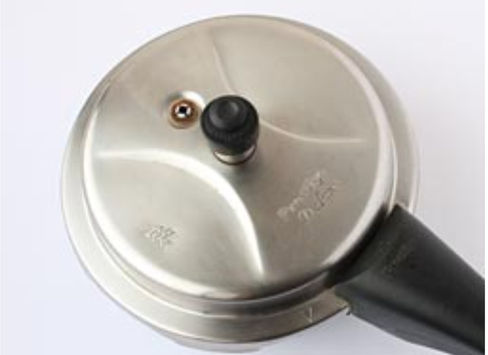

1. મગની દાળને પાણીથી ધોઈ લો. તેને એક બાઉલમાં ૩૦ મિનિટ માટે પાણીમાં પલાળી દો. જો તમારી પાસે
સમય ઓછો છે, તો દાળ ન પલાળો; સ્ટેપ-૩ માં ૨ કપ પાણી નાખોં અને તેને કૂકરમાં ૩ સીટી થાય ત્યાં સુધી પકાવો
(બાફો).
2. ૩૦ મિનિટ પછી, તેમાથી વધારાનું પાણી કાઢી નાખોં.

3. તેને એક પ્રેશર કૂકર (૩-લિટર ક્ષમતાવાળું) માં નાખોં. તેમાં ૧&૧/૨ કપ પાણી, હળદર અને મીઠું
નાખોં. કૂકરને ઢાંકણથી બંધ કરો અને તેને મધ્યમ આંચ પર ૨ સીટી થાય ત્યાં સુધી પકાવો (બાફો).
4. ગેસ બંધ કરી દો; જ્યારે પ્રેશર આપોઆપ નીકળી જાય ત્યારે ઢાંકણ ખોલો.
5. એક નાની કડાઈમાં મધ્યમ આંચ પર સાંતળવા માટે તેલ ગરમ કરો. તેમાં જીરું નાખોં અને જ્યારે તે
સોનેરી થવા લાગે, ત્યારે તેમાં પીસેલું લસણ, કાપેલા લીલા મરચાં, સૂકું લાલ મરચું, છીણેલું આદું અને
લીમડાના પાન નાખોં. તેને ૩૦ સેકંડ માટે સાંતળો.
6. તેમાં કાપેલું ટામેટું નાખોં અને ૧ મિનિટ માટે પકાવો. તેમાં લાલ મરચું પાઉડર અને ધાણાજીરું
નાખોં અને બરાબર મિક્ષ કરો.
7. ગેસ બંધ કરો અને તેને બાફેલી દાળમાં નાખોં. તેને મીઠા માટે ચાખો અને જો જરૂર લાગે તો વધારે
નાખોં.
8. તેમાં લીંબુનો રસ અને ૧/૩ કપ પાણી નાખોં, બરાબર મિક્ષ કરો અને ૨-૩ મિનિટ માટે ઉકાળો.
9. ગેસ બંધ કરી દો અને તેને એક સર્વિંગ બાઉલમાં કાઢો. પીળી મગની દાળને લીલા ધાણાથી સજાવો અને
ભાત અને પરોઠાની સાથે પીરસો.